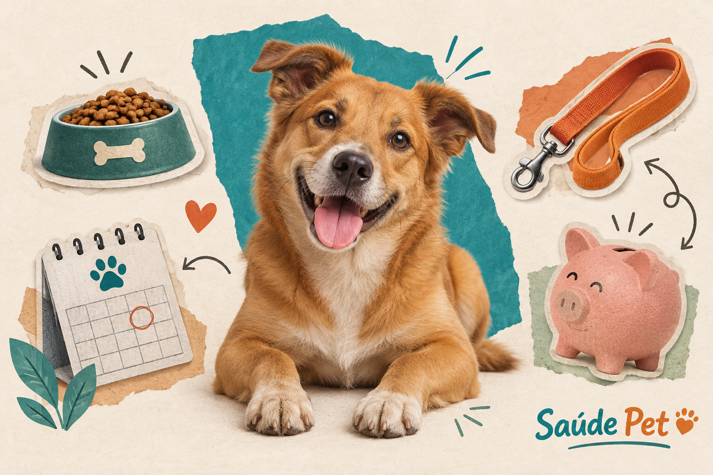
01 · anc-0011536 × 1024 px · 3:2
Quanto custa ter um cachorro por mês, a conta real
Colagem editorial com fotografia e recortes

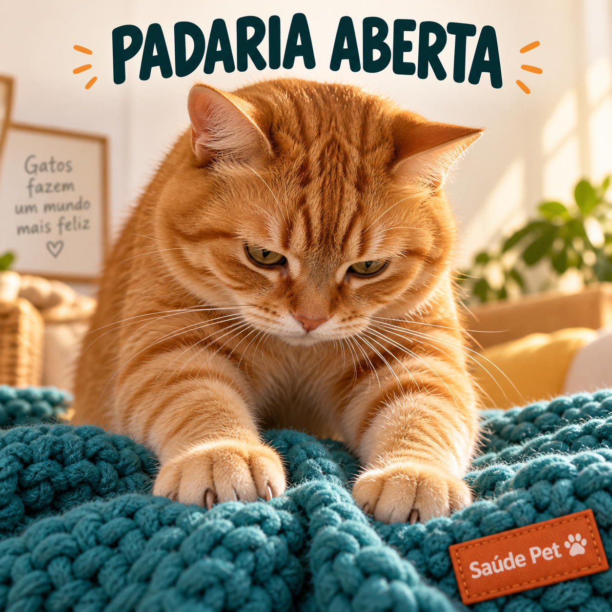
02 · per-0531254 × 1254 px · 1:1
Por que gato amassa pãozinho
Meme fotográfico original

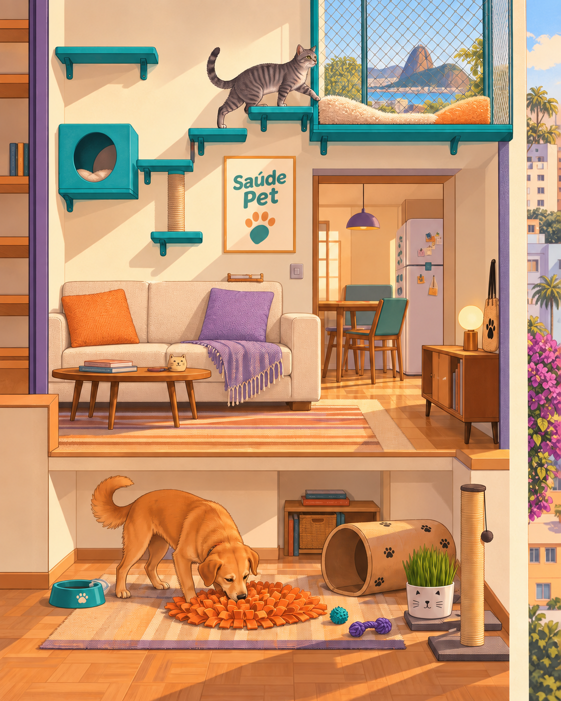
03 · anc-0291122 × 1402 px · 4:5
Enriquecimento ambiental em apartamento: brincar não é luxo
Quadrinhos com cenário em corte

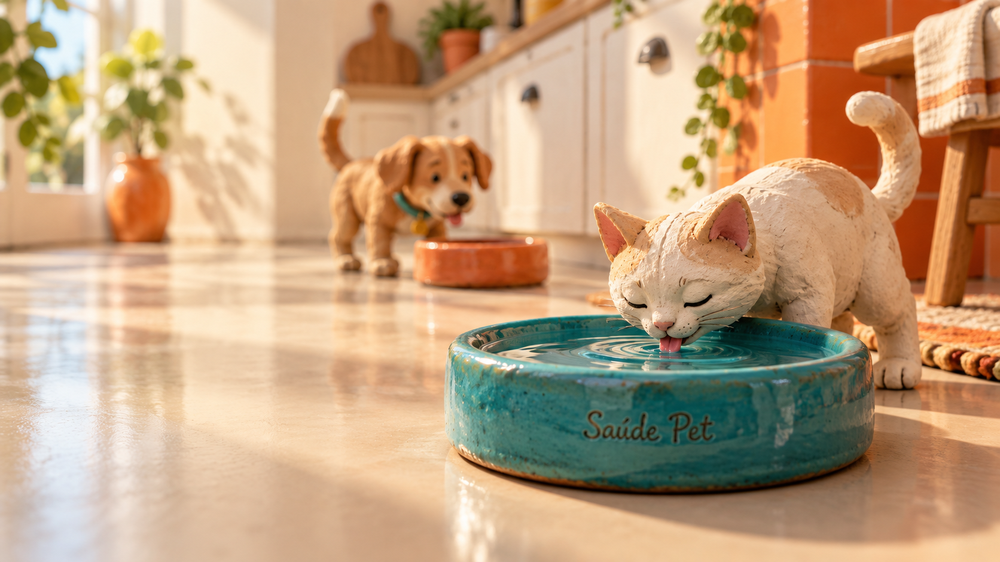
04 · anc-0071672 × 941 px · 16:9
Quanta água o seu cão e o seu gato precisam beber por dia
Miniatura artesanal em argila

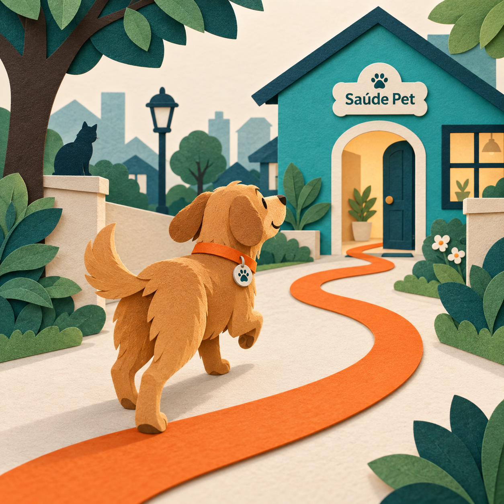
05 · anc-0171254 × 1254 px · 1:1
Microchip e identificação: o que fazer hoje para não perder o seu pet
Recorte de papel em camadas

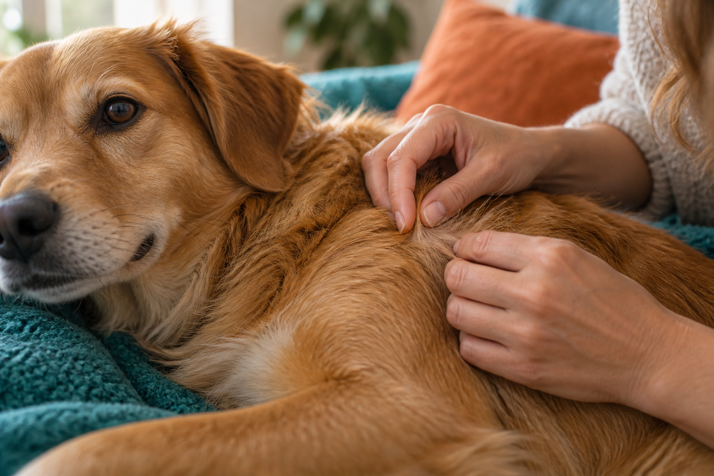
06 · anc-0351536 × 1024 px · 3:2
Pele do pet: coceira, queda de pelo e o que cada uma indica
Fotografia editorial macro

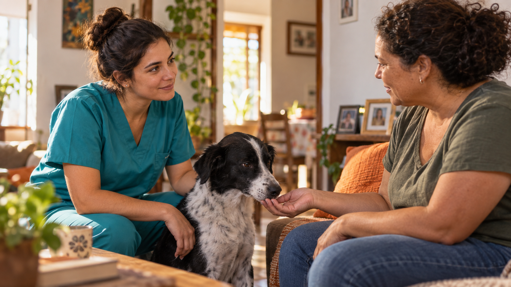
07 · anc-0381672 × 941 px · 16:9
Dia do Veterinário: como escolher um profissional de confiança
Fotografia com narrativa cinematográfica

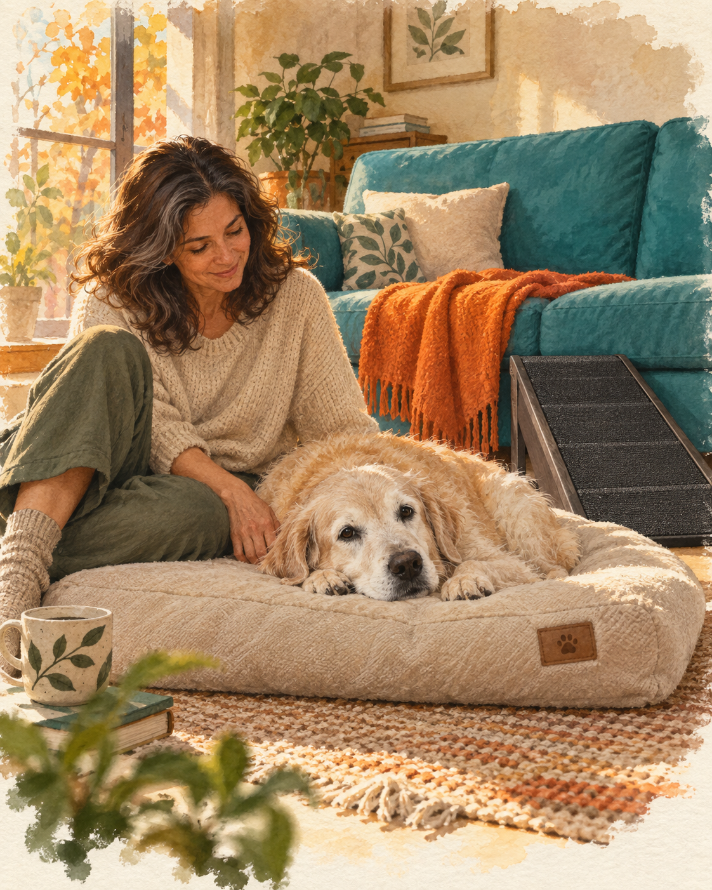
08 · anc-0461122 × 1402 px · 4:5
Ele parou de subir no sofá: artrose e dor crônica
Aquarela narrativa

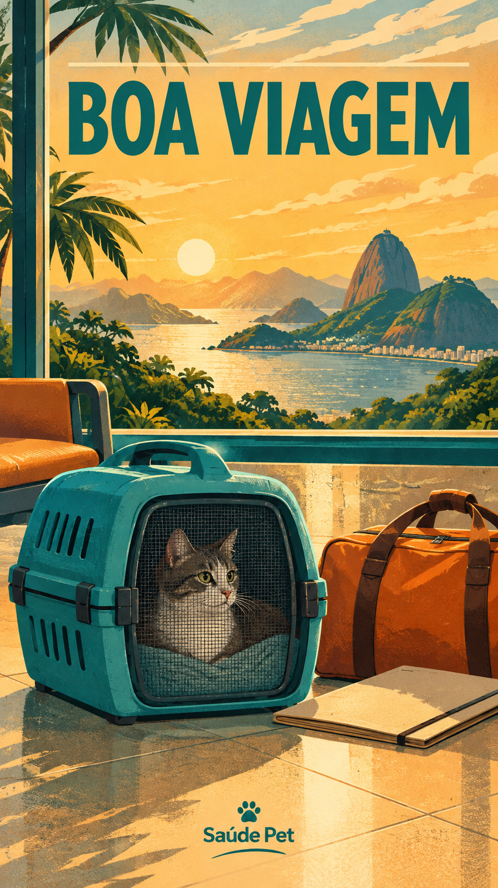
09 · anc-050940 × 1673 px · 9:16
Viajar com o pet: transporte, documento e o que levar
Pôster de viagem ilustrado

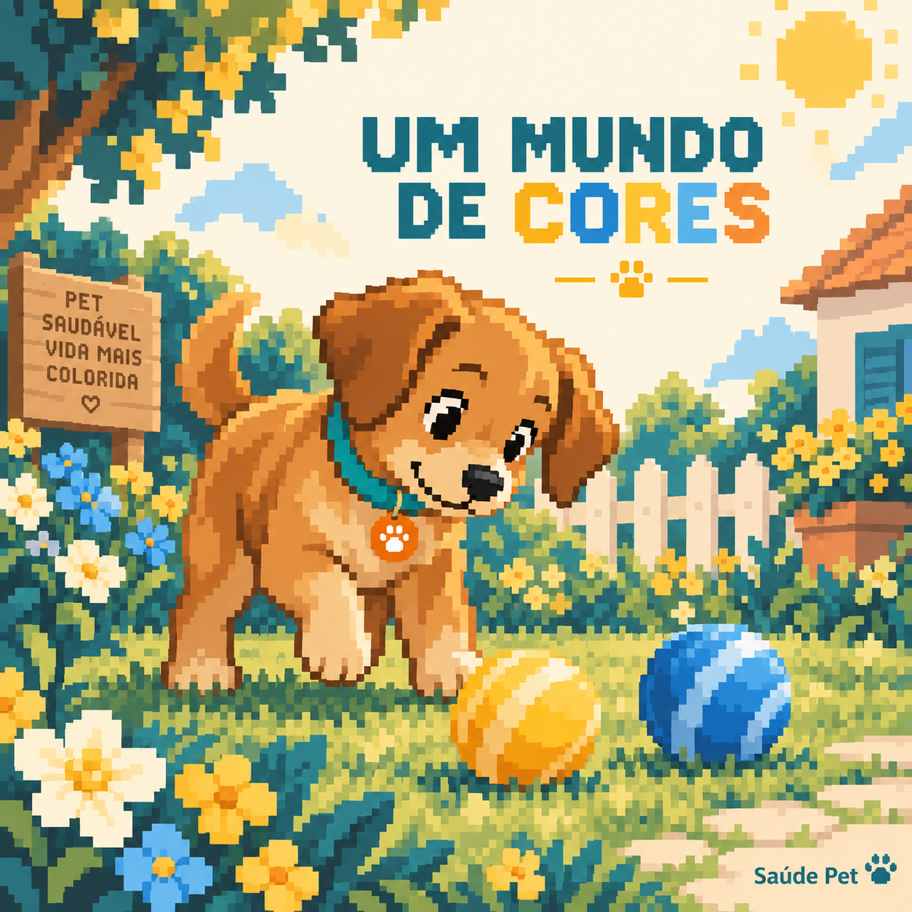
10 · mit-0021254 × 1254 px · 1:1
Cachorro enxerga em preto e branco
Arte em pixels com metáfora visual

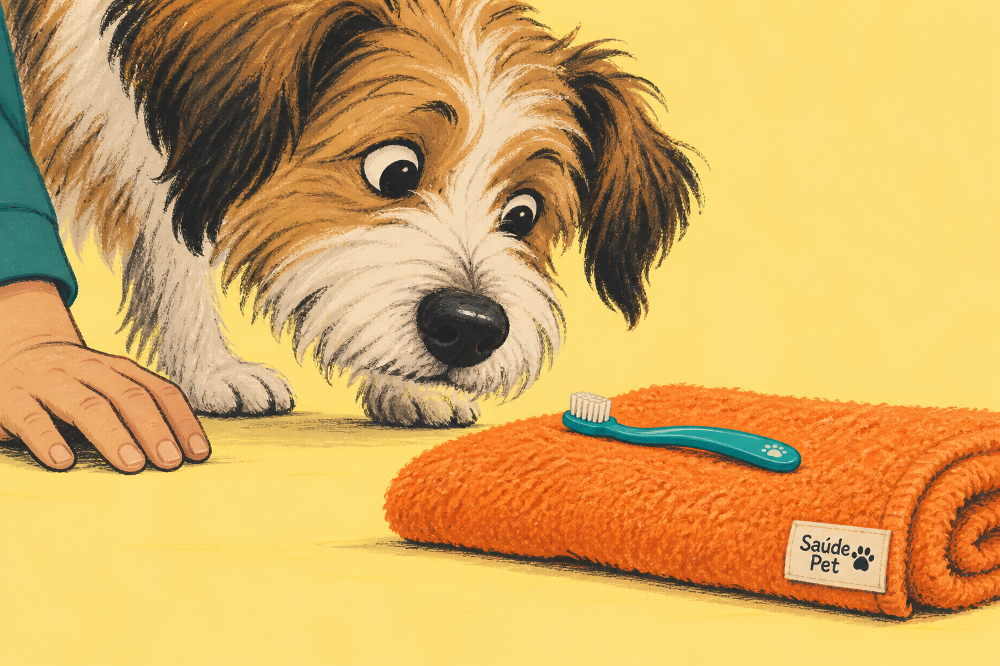
11 · anc-0181536 × 1024 px · 3:2
Escovar os dentes do pet: como começar sem virar briga
Desenho editorial com humor gentil

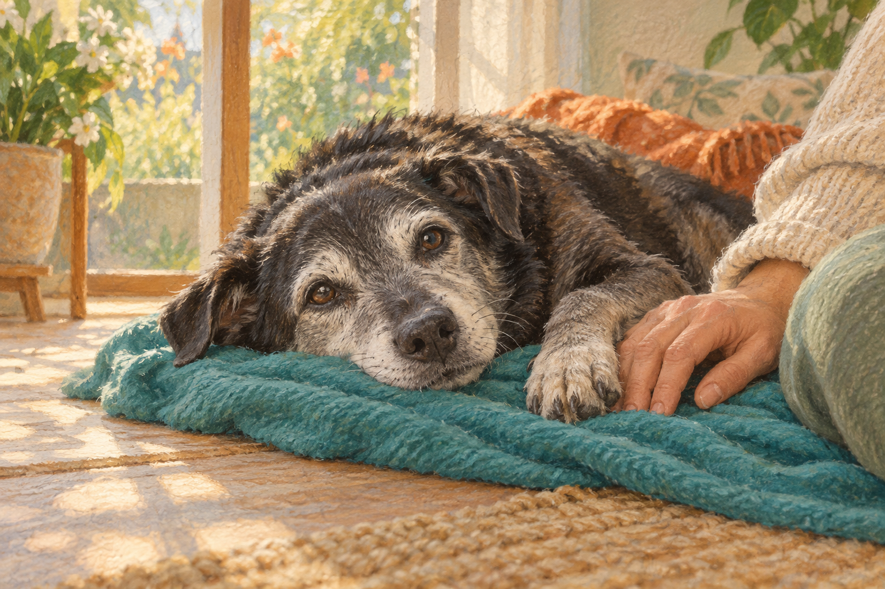
12 · anc-0511536 × 1024 px · 3:2
Qualidade de vida: como conversar sobre eutanásia com o veterinário
Pintura em pastel e cenário íntimo